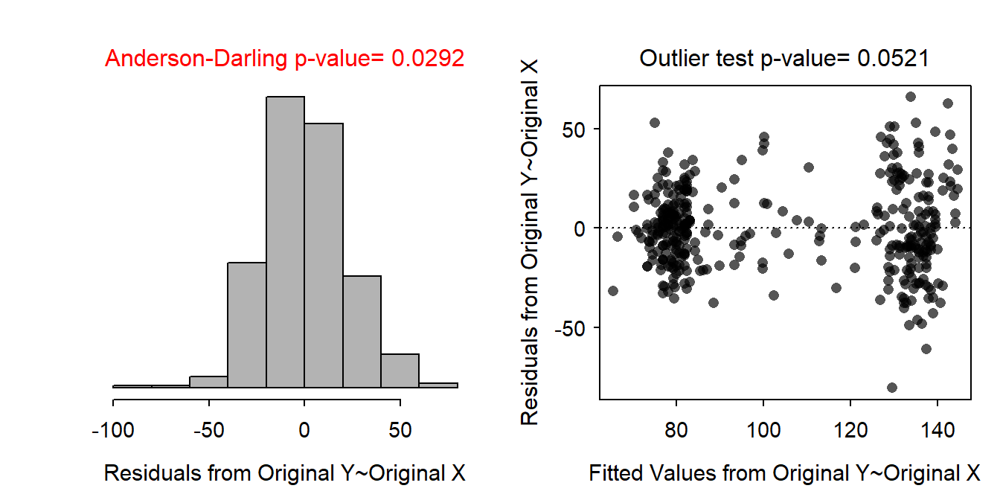
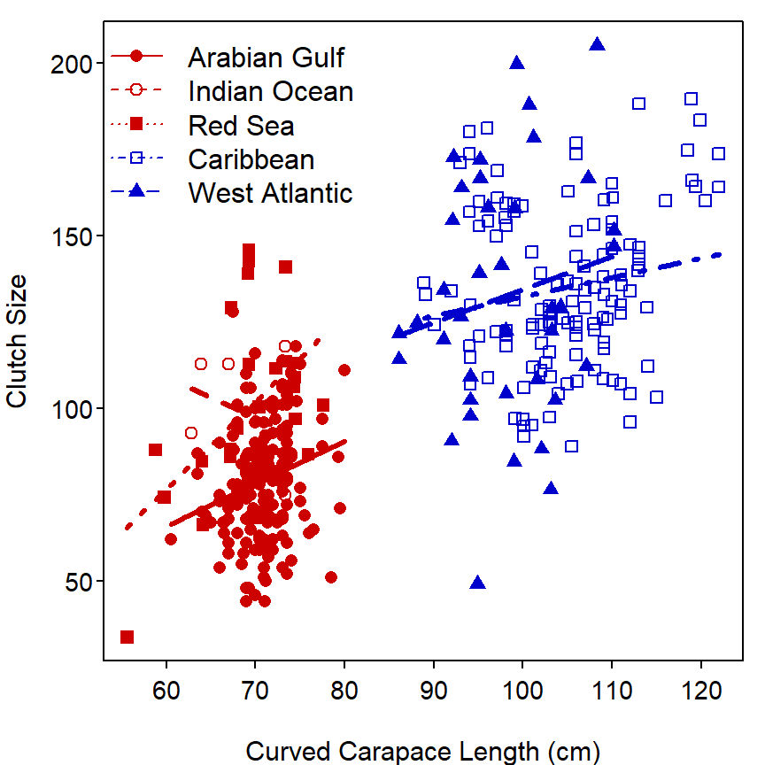

compSlopes() to determine which differ. If you decided that the lines are parallel but some intercepts differ then use compIntercepts() to determine which intercepts differ.
summary() except to see the estimated parameters, which are more efficiently seen with coef() and confint() (cbind()ed together). DO NOT perform hypothesis tests with the p-values in summary() as they are not comprehensive and have not been corrected for multiple comparisons.
<li>The fitplot is a visual for the results for your tests. When making a conclusion don't ignore the results from all of your tests and simply make up a conclusion based on your interpretation of the fitplot (which will not include any acknowledgment of sampling variability).
</ul>As there are five groups in this analysis and the “Arabian Gulf” turtles are to be the reference group, I created the following four indicator variables.
The ultimate full model is then μCSZ = α + βCCL + δ1IO + δ2RS + δ3CO + δ4WA + γ1IO×CCL + γ2RS×CCL + γ3CO×CCL + γ4WA×CCL, where CSZ is “clutch size” and CCL is “curved carapace length” of the turtles.
The submodels for all five groups are below.
It is difficult to assess independence without more information; however, as long as the turtles were randomly selected at a site there should not be a problem of within-group independence and among-group independence is likely given the geographic spread of the regions. The resiuals appear largely linear and homoscedastic (Figure 1-Right), not normal (Anderson Darling p=0.0292) but quite symmetric without overly long tails (Figure 1-Left), and without significant outliers (outlier test p=0.0521).
The slopes between clutch size and curved carapace length are statistically similar among the five regions (p=0.1192; Table 1); thus, the lines that describe the relationship between clutch size and curved carapace length for the separate regions are all parallel. Thus, the relationship between clutch size and curved carapace length does not differ among the separate regions.
The intercepts (assuming parallel lines) for the lines describing the relationship between clutch size and curved carapace length are statistically diffrent among the five regions (p<0.00005; Table 1). Turtles from the Arabian Gulf had a significantly smaller intercept than turtles from all other regions except the Indian Ocean (Table 3). The intercepts for all other pairs of regions are statistically equal (Table 3).
There is a significant relationship between clutch size and curved carapace length (p<0.00005; Table 1). As curved carapace length increases so does clutch size and the degree of increase is the same for all regions (because the lines are paralle as shown above).
A plot that illustrates the overall model fit is in Figure 2. Note that the slope of these lines are statistically equal.
The results of the previous analysis show that the relationship between clutch size and curved carapace length does not differ among the five regions. In other words, clutch size increases with increasing carapace length but that increase is statistically the same across all five regions. The results above also indicate that turtles from the Arabian Gulf have significantly smaller clutch sizes after adjusting for differences in turtle size than turtles from all regions except the Indian Ocean. In other words, some other factor besides size of the turtle explains that turtles from the Arabian Gulf have smaller clutch sizes.

Figure 1: Histogram of residuals (left) and residual plot (right) for indicator variable regression of clutch size on curved carapace length of Hawksbill Turtles from five regions.
Table 1: ANOVA table for the indicator variable regression of clutch size on curved carapace length of Hawksbill Turtles from five regions.
Df Sum Sq Mean Sq F value Pr(>F)
CCL 1 246757 246757 526.8775 < 2.2e-16
Region 4 22045 5511 11.7675 5.266e-09
CCL:Region 4 3461 865 1.8472 0.1192
Residuals 368 172349 468 Table 2: Difference, 95% confidence interval, and p-value for the difference in intercepts for the indicator variable regression of clutch size on curved carapace length of Hawksbill Turtles from five regions.
comparison diff 95% LCI 95% UCI p.adj
1 Indian Ocean-Arabian Gulf 18.639927 -1.684516 38.96437 0.08969
2 Red Sea-Arabian Gulf 21.966128 9.484777 34.44748 0.00002
3 Caribbean-Arabian Gulf 27.802604 20.865117 34.74009 0.00000
4 West Atlantic-Arabian Gulf 30.941861 20.322623 41.56110 0.00000
5 Red Sea-Indian Ocean 3.326201 -19.689726 26.34213 0.99479
6 Caribbean-Indian Ocean 9.162677 -11.381848 29.70720 0.73826
7 West Atlantic-Indian Ocean 12.301934 -9.759729 34.36360 0.54455
8 Caribbean-Red Sea 5.836476 -7.000138 18.67309 0.72411
9 West Atlantic-Red Sea 8.975734 -6.170822 24.12229 0.48269
10 West Atlantic-Caribbean 3.139258 -7.895359 14.17387 0.93634
Figure 2: Scatterplot of clutch size on curved carapace length of Hawksbill Turtles from five regions with best-fit lines.
R Appendix.
ht <- read.csv("HawksbillTurtles.csv")
ht$Region <- factor(ht$Region,
levels=c("Arabian Gulf","Indian Ocean","Red Sea",
"Caribbean","West Atlantic"))
lm1 <- lm(Clutch.Size~CCL*Region,data=ht)
transChooser(lm1)
aov1 <- anova(lm1)
compIntercepts(lm1)
fitPlot(lm1,xlab="Curved Carapace Length (cm)",ylab="Clutch Size",
legend="topleft",col=c("red3","red3","red3","blue3","blue3"))